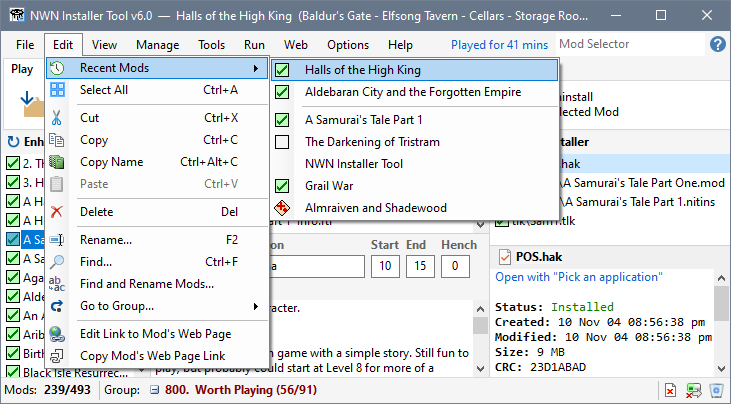
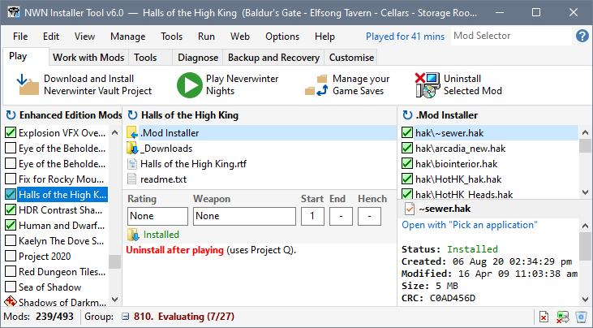
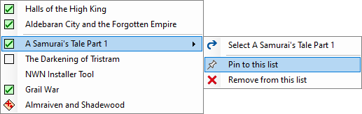
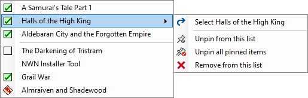
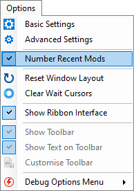
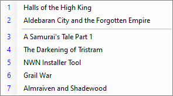
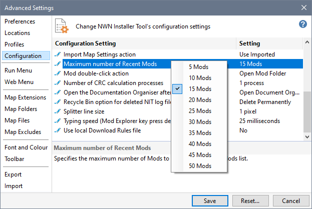
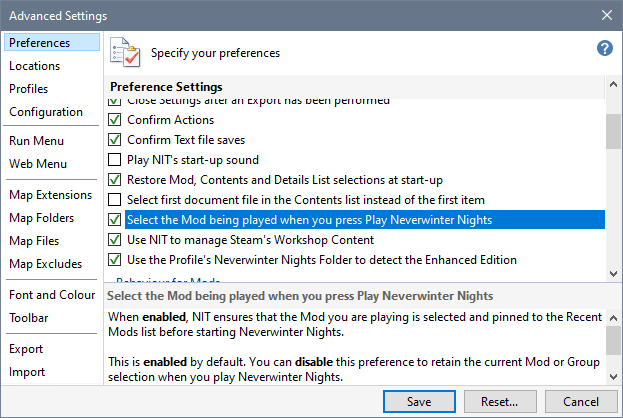

The Installer Tool maintains a list of Mods you have selected. You can access this list using Recent Mods, which is available on the Edit menu, the Mod's right-click menu, right-clicking the Profile Name or clicking Mods: in the Status Bar.

The cursor is positioned on the first entry of the Recent Mods list when you click Mods: or right-click the Profile Name.
Click an item in the list to select the Mod.

Right-click a Mod in the Recent Mods list to display the Actions menu, which you can use to Pin, Unpin or Remove items from the Recent Mods list.

Click on the action you want to perform. The list is updated and you can right-click on another Mod to perform additional actions.

Click Number Recent Mods in the Options menu to use sequence numbers in the list instead of the Install Status Icon.
|
 |
 |
Click Number Recent Mods again to remove the tick and restore the Install Status Icon.
By default a maximum of 15 Mods are saved in the Recent Mods List. You can use Advanced Settings to change this number.

Mods you play are automatically pinned to the Recent Mods List when Select the Mod being played when you press Play Neverwinter Nights is enabled. The default option is Enabled. However, if this behaviour is not how you want it to work, you can Disable the feature.

Use the Mod Selector to navigate to a Mod
Use Recent Mods to navigate to a Mod